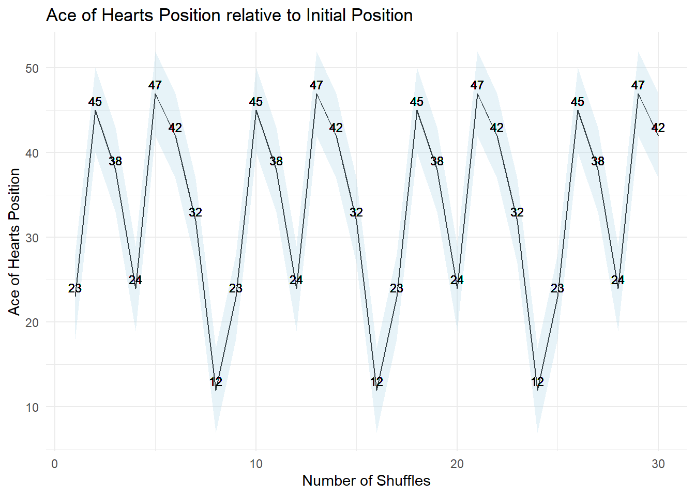

# Function to perform a faro shuffle on a deck of cards
faro <- function(deck, num_shuffles) {
for (i in 1:num_shuffles) {
half1 <- deck[1:(length(deck)/2)]
half2 <- deck[(length(deck)/2 + 1):length(deck)]
deck <- c()
for (j in 1:length(half1)) {
deck <- c(deck, half1[j], half2[j])
}
}
return(deck)
}The Faro Shuffle Unveiled: Introducing the Faro shuffle, a captivating technique that promises not only randomness but a mathematical symphony in the arrangement of cards, creating a dance that echoes with the precision of numbers.
Simulating the Faro Shuffle: into R code that simulates the Faro shuffle, using a function to emulate the interleaving of cards, allowing for the visualization of the ace of hearts’ position after multiple shuffles.
Simulation Parameters and Results:Parameters like the number of Faro shuffles to explore and the simulations to run are defined. The resulting data frame captures the positions of the ace of hearts, forming the basis for the subsequent visual representation.
Visual Exploration with ggplot2: The code utilizes ggplot2 to create a line plot with a ribbon, showcasing the dynamic journey of the ace of hearts through Faro shuffles. The visualization offers insights into the unpredictability introduced by this unique shuffling technique.
This visual exploration not only provides a hands-on experience with the Faro shuffle but also invites readers to appreciate the art and science behind the mesmerizing world of card shuffling.
As a child, on days like today, when raindrops gently tapped against the window pane, my father, armed with a degree in economics and a love for statistics, would weave a world of numbers and cards to pass the time. His eyes would light up with enthusiasm as he shared the intricacies of card games, imparting not just the rules, but a deep appreciation for the unpredictable dance of shuffled decks.
Today, we embark on a visual exploration of card shuffling, delving into a captivating technique known as the Faro shuffle. Unlike conventional shuffling, the Faro shuffle promises not just randomness but a mathematical symphony that unfolds card by card, a dance that echoes with the precision of numbers.
In the quest to unravel the intricacies of card shuffling, we turn to the Faro shuffle, a technique that mimics the graceful dance of cards. The accompanying R code brings this technique to life, allowing us to simulate the position of the ace of hearts after multiple Faro shuffles.
Here, the faro function is defined to simulate the Faro shuffle. It takes a deck of cards (deck) and the number of shuffles to perform (num_shuffles). The function iterates through the halves of the deck, interleaving the cards to simulate the Faro shuffle. This process is repeated for the specified number of shuffles.
# Install the required packages if not already installed
if (!requireNamespace("ggplot2", quietly = TRUE)) {
install.packages("ggplot2")
}
# Load the necessary packages
library(ggplot2)
# Function to simulate the position of the ace of hearts after shuffling
simulate_ace_of_hearts_position <- function(num_shuffles, num_simulations) {
original_deck <- 1:52
ace_position <- numeric(num_simulations)
for (i in 1:num_simulations) {
shuffled_deck <- faro(original_deck, num_shuffles)
ace_position[i] <- which(shuffled_deck == 12)
}
return(ace_position)
}
# Simulation parameters
num_shuffles_list <- seq(1, 30, by = 1)
num_simulations <- 100
# Run the simulation
ace_positions <- lapply(num_shuffles_list, function(num_shuffles) {
simulate_ace_of_hearts_position(num_shuffles, num_simulations)
})
# Prepare data for the plot
df <- data.frame(
Num_Shuffles = rep(num_shuffles_list, each = num_simulations),
Ace_Position = unlist(ace_positions)
)
# Create a line plot with a ribbon in ggplot2
ggplot(df, aes(x = Num_Shuffles, y = Ace_Position)) +
geom_line() +
geom_ribbon(aes(ymin = Ace_Position - 5, ymax = Ace_Position + 5), fill = "lightblue", alpha = 0.3) +
geom_text(aes(label = Ace_Position), vjust = -0.5, hjust = 0.5, size = 3) +
labs(title = "Ace of Hearts Position relative to Initial Position",
x = "Number of Shuffles",
y = "Ace of Hearts Position") +
theme_minimal()
In the simulation parameters section, we define the number of Faro shuffles to explore (num_shuffles_list) and the number of simulations to run for each shuffle scenario (num_simulations). The resulting dataframe (’df’) contains the number of shuffles and the corresponding positions of the ace of hearts after simulation.Finallym the code utilizes ggplot2 to create a line plot with a ribbon that represents the range of possible ace of hearts positions after each Faro shuffle. The resulting visualization allows us to witness the mesmerizing journey of the ace of hearts through the rhytmic Faro shuffle.
Through this visual exploration, we gain insights into the inherent randomness of card shuffling. The fluctuating position of the ace of hearts highlights the complex interplay of probability and chance in card games.
Feel free to experiment with the provided R code, adjusting parameters and exploring different aspects of card shuffling. The visual representation serves as a captivating way to understand the nuances of this seemingly simple yet intriguing process.
!